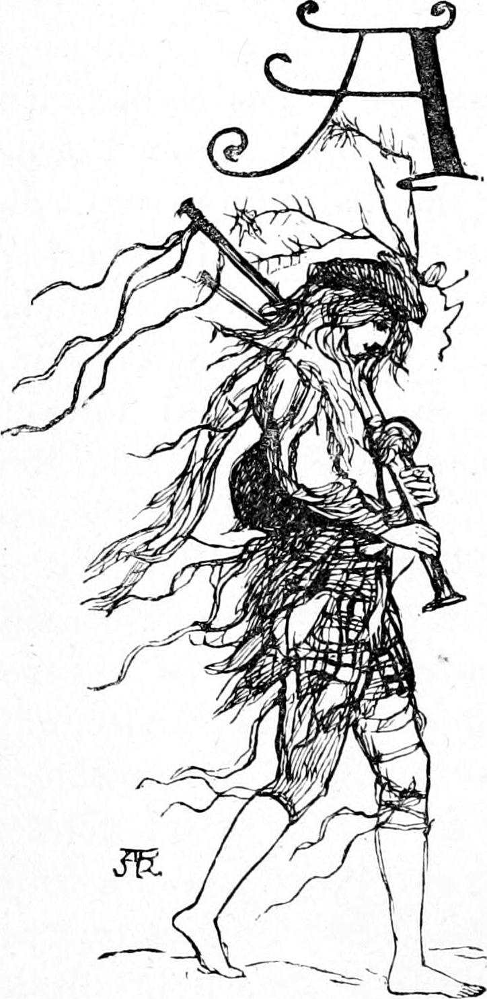
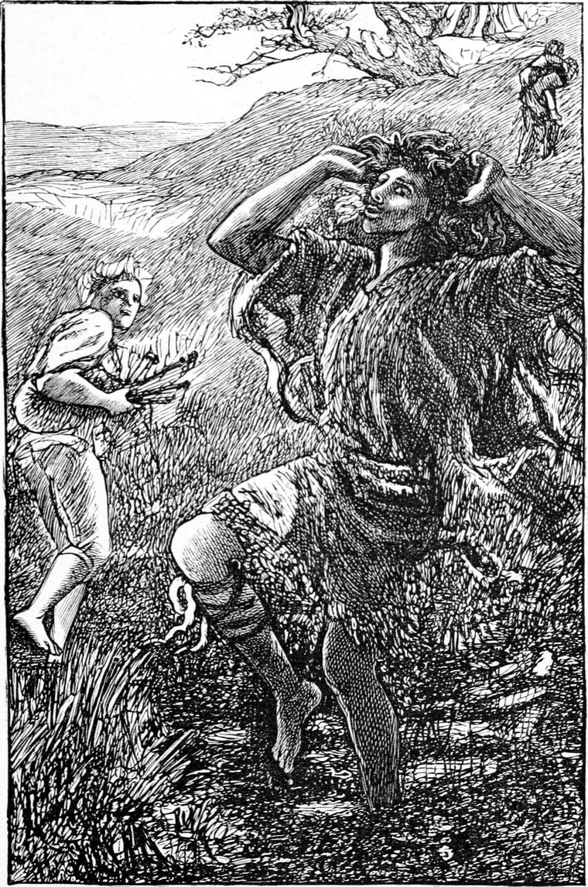

At that time there were a good many beggars going about the country, who lived upon the alms of the charitable. Among these were some half-witted persons, who, although not to be relied upon, were seldom to any extent mischievous. We were not much afraid of them, for the home-neighbourhood is a charmed spot round which has been drawn a magic circle of safety, and we seldom roamed far beyond it. There was, however, one occasional visitor of this class, of whom we stood in some degree of awe. He was commonly styled Foolish Willie. His approach to the manse was always announced by a wailful strain upon the bagpipes, a set of which he had inherited from his father, who had been piper to some Highland nobleman: at least so it was said. Willie never went without his pipes, and was more attached to them than to any living creature. He played them well, too, though in what corner he kept the amount of intellect necessary to the mastery of them was a puzzle. The probability seemed that his wits had not decayed until after he had become in a measure proficient in the use of the chanter, as they call that pipe by means of whose perforations the notes are regulated. However this may be, Willie could certainly play the pipes, and was a great favourite because of it—with children especially, notwithstanding the mixture of fear which his presence always occasioned them. Whether it was from our Highland blood or from Kirsty’s stories, I do not know, but we were always delighted when the far-off sound of his pipes reached us: little Davie would dance and shout with glee. Even the Kelpie, Mrs. Mitchell that is, was benignantly inclined towards Wandering Willie, as some people called him after the old song; so much so that Turkey, who always tried to account for things, declared his conviction that Willie must be Mrs. Mitchell’s brother, only she was ashamed and wouldn’t own him. I do not believe he had the smallest atom of corroboration for the conjecture, which therefore was bold and worthy of the inventor. One thing we all knew, that she would ostentatiously fill the canvas bag which he carried by his side, with any broken scraps she could gather, would give him as much milk to drink as he pleased, and would speak kind, almost coaxing, words to the poor natural—words which sounded the stranger in our ears, that they were quite unused to like sounds from the lips of the Kelpie.
It is impossible to describe Willie’s dress: the agglomeration of ill-supplied necessity and superfluous whim was never exceeded. His pleasure was to pin on his person whatever gay-coloured cotton handkerchiefs he could get hold of; so that, with one of these behind and one before, spread out across back and chest, he always looked like an ancient herald come with a message from knight or nobleman. So incongruous was his costume that I could never tell whether kilt or trousers was the original foundation upon which it had been constructed. To his tatters add the bits of old ribbon, list, and coloured rag which he attached to his pipes wherever there was room, and you will see that he looked all flags and pennons—a moving grove of raggery, out of which came the screaming chant and drone of his instrument. When he danced, he was like a whirlwind that had caught up the contents of an old-clothes-shop. It is no wonder that he should have produced in our minds an indescribable mixture of awe and delight—awe, because no one could tell what he might do next, and delight because of his oddity, agility, and music. The first sensation was always a slight fear, which gradually wore off as we became anew accustomed to the strangeness of the apparition. Before the visit was over, wee Davie would be playing with the dangles of his pipes, and laying his ear to the bag out of which he thought the music came ready-made. And Willie was particularly fond of Davie, and tried to make himself agreeable to him after a hundred grotesque fashions. The awe, however, was constantly renewed in his absence, partly by the threats of the Kelpie, that, if so and so, she would give this one or that to Foolish Willie to take away with him—a threat which now fell almost powerless upon me, but still told upon Allister and Davie.
One day, in early summer—it was after I had begun to go to school—I came home as usual at five o’clock, to find the manse in great commotion. Wee Davie had disappeared. They were looking for him everywhere without avail. Already all the farmhouses had been thoroughly searched. An awful horror fell upon me, and the most frightful ideas of Davie’s fate arose in my mind. I remember giving a howl of dismay the moment I heard of the catastrophe, for which I received a sound box on the ear from Mrs. Mitchell. I was too miserable, however, to show any active resentment, and only sat down upon the grass and cried. In a few minutes, my father, who had been away visiting some of his parishioners, rode up on his little black mare. Mrs. Mitchell hurried to meet him, wringing her hands, and crying—
“Oh, sir! oh, sir! Davie’s away with Foolish Willie!”
This was the first I had heard of Willie in connection with the affair. My father turned pale, but kept perfectly quiet.
“Which way did he go?” he asked.
Nobody knew.
“How long is it ago?”
“About an hour and a half, I think,” said Mrs. Mitchell.
To me the news was some relief. Now I could at least do something. I left the group, and hurried away to find Turkey. Except my father, I trusted more in Turkey than in anyone. I got on a rising ground near the manse, and looked all about until I found where the cattle were feeding that afternoon, and then darted off at full speed. They were at some distance from home, and I found that Turkey had heard nothing of the mishap. When I had succeeded in conveying the dreadful news, he shouldered his club, and said—
“The cows must look after themselves, Ranald!”
With the words he set off at a good swinging trot in the direction of a little rocky knoll in a hollow about half a mile away, which he knew to be a favourite haunt of Wandering Willie, as often as he came into the neighbourhood. On this knoll grew some stunted trees, gnarled and old, with very mossy stems. There was moss on the stones too, and between them grew lovely harebells, and at the foot of the knoll there were always in the season tall foxgloves, which had imparted a certain fear to the spot in my fancy. For there they call them Dead Man’s Bells, and I thought there was a murdered man buried somewhere thereabout. I should not have liked to be there alone even in the broad daylight. But with Turkey I would have gone at any hour, even without the impulse which now urged me to follow him at my best speed. There was some marshy ground between us and the knoll, but we floundered through it; and then Turkey, who was some distance ahead of me, dropped into a walk, and began to reconnoitre the knoll with some caution. I soon got up with him.
“He’s there, Ranald!” he said.
“Who? Davie?”
“I don’t know about Davie; but Willie’s there.”
“How do you know?”
“I heard his bagpipes grunt. Perhaps Davie sat down upon them.”
“Oh, run, Turkey!” I said, eagerly.
“No hurry,” he returned. “If Willie has him, he won’t hurt him, but it mayn’t be easy to get him away. We must creep up and see what can be done.”
Half dead as some of the trees were, there was foliage enough upon them to hide Willie, and Turkey hoped it would help to hide our approach. He went down on his hands and knees, and thus crept towards the knoll, skirting it partly, because a little way round it was steeper. I followed his example, and found I was his match at crawling in four-footed fashion. When we reached the steep side, we lay still and listened.
“He’s there!” I cried in a whisper.
“Sh!” said Turkey; “I hear him. It’s all right. We’ll soon have a hold of him.”
A weary whimper as of a child worn out with hopeless crying had reached our ears. Turkey immediately began to climb the side of the knoll.
“Stay where you are, Ranald,” he said. “I can go up quieter than you.”
I obeyed. Cautious as a deer-stalker, he ascended, still on his hands and knees. I strained my eyes after his every motion. But when he was near the top he lay perfectly quiet, and continued so till I could bear it no longer, and crept up after him. When I came behind him, he looked round angrily, and made a most emphatic contortion of his face; after which I dared not climb to a level with him, but lay trembling with expectation. The next moment I heard him call in a low whisper:
“Davie! Davie! wee Davie!”
But there was no reply. He called a little louder, evidently trying to reach by degrees just the pitch that would pierce to Davie’s ears and not arrive at Wandering Willie’s, who I rightly presumed was farther off. His tones grew louder and louder—but had not yet risen above a sharp whisper, when at length a small trembling voice cried “Turkey! Turkey!” in prolonged accents of mingled hope and pain. There was a sound in the bushes above me—a louder sound and a rush. Turkey sprang to his feet and vanished. I followed. Before I reached the top, there came a despairing cry from Davie, and a shout and a gabble from Willie. Then followed a louder shout and a louder gabble, mixed with a scream from the bagpipes, and an exulting laugh from Turkey. All this passed in the moment I spent in getting to the top, the last step of which was difficult. There was Davie alone in the thicket, Turkey scudding down the opposite slope with the bagpipes under his arm, and Wandering Willie pursuing him in a foaming fury. I caught Davie in my arms from where he lay sobbing and crying “Yanal! Yanal!” and stood for a moment not knowing what to do, but resolved to fight with teeth and nails before Willie should take him again. Meantime Turkey led Willie towards the deepest of the boggy ground, in which both were very soon floundering, only Turkey, being the lighter, had the advantage. When I saw that, I resolved to make for home. I got Davie on my back, and slid down the farther side to skirt the bog, for I knew I should stick in it with Davie’s weight added to my own. I had not gone far, however, before a howl from Willie made me aware that he had caught sight of us; and looking round, I saw him turn from Turkey and come after us. Presently, however, he hesitated, then stopped, and began looking this way and that from the one to the other of his treasures, both in evil hands. Doubtless his indecision would have been very ludicrous to anyone who had not such a stake in the turn of the scale. As it was, he made up his mind far too soon, for he chose to follow Davie. I ran my best in the very strength of despair for some distance, but, seeing very soon that I had no chance, I set Davie down, telling him to keep behind me, and prepared, like the Knight of the Red Cross, “sad battle to darrayne”. Willie came on in fury, his rags fluttering like ten scarecrows, and he waving his arms in the air, with wild gestures and grimaces and cries and curses. He was more terrible than the bull, and Turkey was behind him. I was just, like a negro, preparing to run my head into the pit of his stomach, and so upset him if I could, when I saw Turkey running towards us at full speed, blowing into the bagpipes as he ran. How he found breath for both I cannot understand. At length, he put the bag under his arm, and forth issued such a combination of screeching and grunting and howling, that Wandering Willie, in the full career of his rage, turned at the cries of his companion. Then came Turkey’s masterpiece. He dashed the bagpipes on the ground, and commenced kicking them before him like a football, and the pipes cried out at every kick. If Turkey’s first object had been their utter demolition, he could not have treated them more unmercifully. It was no time for gentle measures: my life hung in the balance. But this was more than Willie could bear. He turned from us, and once again pursued his pipes. When he had nearly overtaken him, Turkey gave them a last masterly kick, which sent them flying through the air, caught them as they fell, and again sought the bog, while I, hoisting Davie on my back, hurried, with more haste than speed, towards the manse.

What took place after I left them, I have only from Turkey’s report, for I never looked behind me till I reached the little green before the house, where, setting Davie down, I threw myself on the grass. I remember nothing more till I came to myself in bed.
When Turkey reached the bog, and had got Wandering Willie well into the middle of it, he threw the bagpipes as far beyond him as he could, and then made his way out. Willie followed the pipes, took them, held them up between him and the sky as if appealing to heaven against the cruelty, then sat down in the middle of the bog upon a solitary hump, and cried like a child. Turkey stood and watched him, at first with feelings of triumph, which by slow degrees cooled down until at length they passed over into compassion, and he grew heartily sorry for the poor fellow, although there was no room for repentance. After Willie had cried for a while, he took the instrument as if it had been the mangled corpse of his son, and proceeded to examine it. Turkey declared his certainty that none of the pipes were broken; but when at length Willie put the mouthpiece to his lips, and began to blow into the bag, alas! it would hold no wind. He flung it from him in anger and cried again. Turkey left him crying in the middle of the bog. He said it was a pitiful sight.
It was long before Willie appeared in that part of the country again; but, about six months after, some neighbours who had been to a fair twenty miles off, told my father that they had seen him looking much as usual, and playing his pipes with more energy than ever. This was a great relief to my father, who could not bear the idea of the poor fellow’s loneliness without his pipes, and had wanted very much to get them repaired for him. But ever after my father showed a great regard for Turkey. I heard him say once that, if he had had the chance, Turkey would have made a great general. That he should be judged capable of so much, was not surprising to me; yet he became in consequence a still greater being in my eyes.
When I set Davie down, and fell myself on the grass, there was nobody near. Everyone was engaged in a new search for Davie. My father had rode off at once without dismounting, to inquire at the neighbouring toll-gate whether Willie had passed through. It was not very likely, for such wanderers seldom take to the hard high road; but he could think of nothing else, and it was better to do something. Having failed there, he had returned and ridden along the country road which passed the farm towards the hills, leaving Willie and Davie far behind him. It was twilight before he returned. How long, therefore, I lay upon the grass, I do not know. When I came to myself, I found a sharp pain in my side. Turn how I would, there it was, and I could draw but a very short breath for it. I was in my father’s bed, and there was no one in the room. I lay for some time in increasing pain; but in a little while my father came in, and then I felt that all was as it should be. Seeing me awake, he approached with an anxious face.
“Is Davie all right, father?” I asked.
“He is quite well, Ranald, my boy. How do you feel yourself now?”
“I’ve been asleep, father?”
“Yes; we found you on the grass, with Davie pulling at you and trying to wake you, crying, ‘Yanal won’t peak to me. Yanal! Yanal!’ I am afraid you had a terrible run with him. Turkey, as you call him, told me all about it. He’s a fine lad Turkey!”
“Indeed he is, father!” I cried with a gasp which betrayed my suffering.
“What is the matter, my boy?” he asked.
“Lift me up a little, please,” I said, “I have such a pain in my side!”
“Ah!” he said, “it catches your breath. We must send for the old doctor.”
The old doctor was a sort of demigod in the place. Everybody believed and trusted in him; and nobody could die in peace without him any more than without my father. I was delighted at the thought of being his patient. I think I see him now standing with his back to the fire, and taking his lancet from his pocket, while preparations were being made for bleeding me at the arm, which was a far commoner operation then than it is now.
That night I was delirious, and haunted with bagpipes. Wandering Willie was nowhere, but the atmosphere was full of bagpipes. It was an unremitting storm of bagpipes—silent, but assailing me bodily from all quarters—now small as motes in the sun, and hailing upon me; now large as feather-beds, and ready to bang us about, only they never touched us; now huge as Mount Ætna, and threatening to smother us beneath their ponderous bulk; for all the time I was toiling on with little Davie on my back. Next day I was a little better, but very weak, and it was many days before I was able to get out of bed. My father soon found that it would not do to let Mrs. Mitchell attend upon me, for I was always worse after she had been in the room for any time; so he got another woman to take Kirsty’s duties, and set her to nurse me, after which illness became almost a luxury. With Kirsty near, nothing could go wrong. And the growing better was pure enjoyment.
Once, when Kirsty was absent for a little while, Mrs. Mitchell brought me some gruel.
“The gruel’s not nice,” I said.
“It’s perfectly good, Ranald, and there’s no merit in complaining when everybody’s trying to make you as comfortable as they can,” said the Kelpie.
“Let me taste it,” said Kirsty, who that moment entered the room.—“It’s not fit for anybody to eat,” she said, and carried it away, Mrs. Mitchell following her with her nose horizontal.
Kirsty brought the basin back full of delicious gruel, well boiled, and supplemented with cream. I am sure the way in which she transformed that basin of gruel has been a lesson to me ever since as to the quality of the work I did. No boy or girl can have a much better lesson than—to do what must be done as well as it can be done. Everything, the commonest, well done, is something for the progress of the world; that is, lessens, if by the smallest hair’s-breadth, the distance between it and God.
Oh, what a delight was that first glowing summer afternoon upon which I was carried out to the field where Turkey was herding the cattle! I could not yet walk. That very morning, as I was being dressed by Kirsty, I had insisted that I could walk quite well, and Kirsty had been over-persuaded into letting me try. Not feeling steady on my legs, I set off running, but tumbled on my knees by the first chair I came near. I was so light from the wasting of my illness, that Kirsty herself, little woman as she was, was able to carry me. I remember well how I saw everything double that day, and found it at first very amusing. Kirsty set me down on a plaid in the grass, and the next moment, Turkey, looking awfully big, and portentously healthy, stood by my side. I wish I might give the conversation in the dialect of my native country, for it loses much in translation; but I have promised, and I will keep my promise.
“Eh, Ranald!” said Turkey, “it’s not yourself?”
“It’s me, Turkey,” I said, nearly crying with pleasure.
“Never mind, Ranald,” he returned, as if consoling me in some disappointment; “we’ll have rare fun yet.”
“I’m frightened at the cows, Turkey. Don’t let them come near me.”
“No, that I won’t,” answered Turkey, brandishing his club to give me confidence, “I’ll give it them, if they look at you from between their ugly horns.”
“Turkey,” I said, for I had often pondered the matter during my illness, “how did Hawkie behave while you were away with me—that day, you know?”
“She ate about half a rick of green corn,” answered Turkey, coolly. “But she had the worst of it. They had to make a hole in her side, or she would have died. There she is off to the turnips!”
He was after her with shout and flourish. Hawkie heard and obeyed, turning round on her hind-legs with a sudden start, for she knew from his voice that he was in a dangerously energetic mood.
“You’ll be all right again soon,” he said, coming quietly back to me. Kirsty had gone to the farmhouse, leaving me with injunctions to Turkey concerning me.
“Oh yes, I’m nearly well now; only I can’t walk yet.”
“Will you come on my back?” he said.
When Kirsty returned to take me home, there was I following the cows on Turkey’s back, riding him about wherever I chose; for my horse was obedient as only a dog, or a horse, or a servant from love can be. From that day I recovered very rapidly.